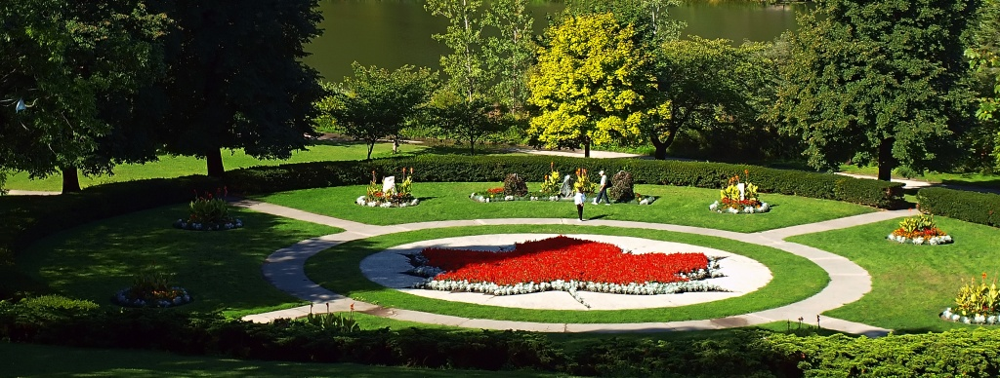
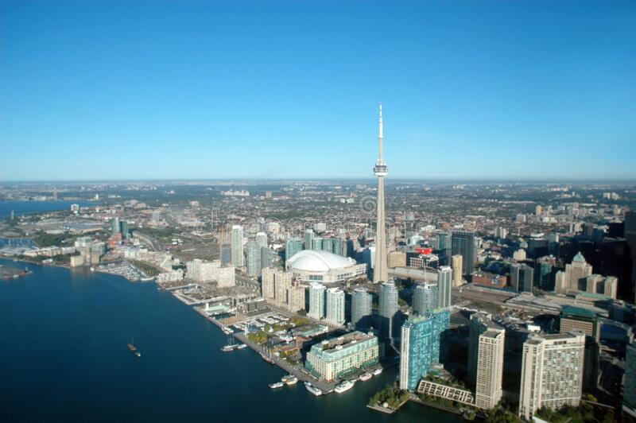

This is the website for the the photo Gallery of the Canadian Cities
Toronto (1834) As was the case with many Canadian cities, the place now known as Toronto was inhabited for thousands of years before the arrival of Europeans, by a number of tribes including the Cayugas, Mohawks, Neutral-Erie, Oneidas, Senecas and Wendat. Between 1750 and 1759 the French operated a trading post, Fort Rouille, in the area where the Canadian National Exhibition is now located. The British purchased 250,000 acres (1,000 km2) of land from the native peoples in 1787 and Governor John Graves Simcoe chose the site for the capital (which he named York) of the newly created Upper Canada. Concerned with military transportation to protect the new colony from US attack, he built roads west to what is now Windsor, east towards Montreal, and north, the present day Yonge Street.
This is the High park, Toronto
This is the High park, Toronto
